FOOT
NOTES

Welcome to Footnotes! This website explores how to navigate by walking, so typical scroll click swipe interactions won’t get you far. Instead, your body is more involved in the interaction. Because this is quite unusual, let’s walk you through how to navigate here
The main interaction will be walking...
... and turning. Whenever there is a decision to make, all options will be presented on a circle and you turn around to select a dot.
(
)
(
)
INTRODUCTION

One step after another
Mona Ortner & Helen Hausdorf
Walking teaches us where we belong. It is a form of noticing, revealing systems we don't usually see, reminding us of our speed, our place in a web of interrelations with environment, society, community. It sets our thoughts free, putting us out into the world, in relation to it, to each other, to ourselves. We live in a moment where digital technologies touch almost every part of our everyday life, our work, our forms of togetherness. Our eyes fly over screens. Our ears take in information. Bodily movement is reduced to fingertips drumming on keyboards, thumbs swiping, scrolling, clicking. More and more aspects of our lives, including our bodies, are measured, quantified, analysed. Can you also feel your body glitching after too much time in front of a screen? Distracted and disconnected, not only from each other, but from our senses, our bodies, and thought processes that can't be pushed, grasped, or put into order, the rhythm and speed of walking, just walking, become almost a slow protest. Putting one foot in front of the other turns into a counter-act against a digital environment where the traces we leave with our thumbs on slippery displays become profit, and our attention a commodity. Walking can weave our thoughts to the landscape we move through, opening a space where thinking, perception, and exchange happen differently. Most digital applications are designed to be fast, immediate and remove friction. Walking has its own own beat and pace, ones we can't simply scroll past. Making space for the unpredictable to enter might mean to slow down on purpose, to stand impatience and to get lost And so, this leaflet holds a map of scores: short notations, prompts for movement and thought, gathered along the way. It won't show you the right path, or help you find a particular place. Take it instead as an invitation to make a step on a stony surface, rather than a swipe on a polished screen. You are surrounded by scores that can serve as starting points for thought while you walk, meander, and let your mind drift.
CREATIVITY
Tracing a headland
Rebecca Solnit
Where does it start? Muscles tense. One leg a pillar, holding the body upright between the earth and sky. The other a pendulum, swinging from behind. Heel touches down. The whole weight of the body rolls forward onto the ball of the foot. The big toe pushes off, and the delicately balanced weight of the body shifts again. The legs reverse position. It starts with a step and then another step and then another that add up like taps on a drum to a rhythm, the rhythm of walking. The most obvious and the most obscure thing in the world, this walking that wanders so readily into religion, philosophy, landscape, urban policy, anatomy, allegory, and heartbreak. The history of walking is an unwritten, secret history whose fragments can be found in a thousand unemphatic passages in books, as well as in songs, streets, and almost everyone's adventures. The bodily history of walking is that of bipedal evolution and human anatomy. Most of the time walking is merely practical, the unconsidered locomotive means between two sites. To make walking into an investigation, a ritual, a meditation, is a special subset of walking, physiologically like and philosophically unlike the way the mail carrier brings the mail and the office worker reaches the train. Which is to say that the subject of walking is, in some sense, about how we invest universal acts with particular meanings. Like eating or breathing, it can be invested with wildly different cultural meanings, from the erotic to the spiritual, from the revolutionary to the artistic. Here this Seite 4: history begins to become part of the history of the imagination and the culture, of what kind of pleasure, freedom, and meaning are pursued at different times by different kinds of walks and walkers. That imagination has both shaped and been shaped by the spaces it passes through on two feet. Walking has created paths, roads, trade routes; generated local and cross-continental senses of place; shaped cities, parks, generated maps, guidebooks, gear, and, further afield, a vast library of walking stories and poems, of pilgrimages, mountaineering expeditions, meanders, and summer picnics. The landscapes, urban and rural, gestate the stories and the stories bring us back to the sites of this history. This history of walking is an amateur history, just as walking is an amateur act. To use a walking metaphor, it trespasses through everybody else's field—through anatomy, anthropology, architecture, gardening, geography, political and cultural history, literature, sexuality, religious studies—and doesn't stop in any of them on its long route. For if a field of expertise can be imagined as a real field— a nice rectangular confine carefully tilled and yielding a specific crop—then the subject of walking resembles walking itself in its lack of confines. And though the history of walking is, as part of all these fields and everyone's experience, virtu ally infinite, this history of walking I am writing can only be partial, an idiosyncratic path traced through them by one walker, with much doubling back an looking around. In what follows, I have tried to trace the paths that brought most of us in my country, the United States, into the present moment, a history compounded largely of European sources, inflected and subverted by the vastly different scale of American space, the centuries of adaptation and mutation here and by the other traditions that have recently met up with those paths, notably Asian traditions. The history of walking is everyone's history, and any written version can only hope to indicate some of the more well-trodden paths in the author's vicinity—which is to say, the paths I trace are not the only paths. I sat down one spring day to write about walking and stood up again, because a desk is no place to think on the large scale. In a headland just north of the Golde Gate Bridge studded with abandoned military fortifications, I went out walking up a valley and along a ridgeline, then down to the Pacific. [...] Seite 5: I kept coming back to this route for respite from my work and for my work too, because thinking is generally thought of as doing nothing in a production-oriented culture, and doing nothing is hard to do. It's best done by disguising it as doing something, and the something closest to doing nothing is walking. Walking itself is the intentional act closest to the unwilled rhythms of the body, to breathing and the heating of the heart. It strikes a delicate balance between working and idling, being and doing. It is a bodily labor that produces nothing but thoughts, experiences, arrivals. After all those years of walking to work out other things, it made sense to come back to work close to home, in Thoreau's sense, and to think about walking. Walking, ideally, is a state in which the mind, the body, and the world are aligned, as though they were three characters finally in conversation together, three notes suddenly making a chord. Walking allows us to be in our bodies and in the world without being made busy by them: it leaves us free to think without being wholly lost in our thoughts. [...] The rhythm of walking generates a kind of rhythm of thinking, and the pas- Seite 6: sage through a landscape echoes or stimulates the passage through a series of thoughts. This creates an odd consonance between internal and external passage, one that suggests that the mind is also a landscape of sorts and that walking is one way to traverse it. A new thought often seems like a feature of the landscape that was there all along, as though thinking were traveling rather than making. And so one aspect of the history of walking is the history of thinking made concrete—for the motions of the mind cannot be traced, but those of the feet can. Walking can also be imagined as a visual activity, every walk a tour leisurely enough both to see and to think over the sights, to assimilate the new into the known. Perhaps this is where walking's peculiar utility for thinkers comes from. The surprises, liberations, and clarifications of travel can sometimes be garnered by going around the block as well as going around the world, and walking travels both near and far. Or perhaps walking should be called movement, not travel, for one can walk in circles or travel around the world immobilized in a seat, and a certain kind of wanderlust can only be assuaged by the acts of the body itself in motion, not the motion of the car, boat, or plane. It is the movement as well as the sights going by that seems to make things happen in the mind, and this is what makes walking ambiguous and endlessly fertile: it is both means and end travel and destination. [...] Seite 7: Seite 8: Of course walking, as any reader of Thoreau's essay “Walking” knows, inevitably leads into other subjects. Walking is a subject that is always straying. [...] Seite 9: Although I came to think about walking, I couldn't stop thinking about everything else, about the letters I should have been writing, about the conversations I'd been having. At least when my mind strayed to the phone conversation with my friend Sono that morning, I was still on track. Sono's truck had been stolen from her West Oakland studio, and she told me that though everyone responded to it as a disaster, she wasn't all that sorry it was gone, or in a hurry to replace it. There was a joy, she said, to finding that her body was adequate to get her where she was going, and it was a gift to develop a more tangible, concrete relationship io her neighborhood and its residents. We talked about the more stately sense of time one has afoot and on public transit, where things must be planned and scheduled beforehand, rather than rushed through at the last minute, and about the sense of place that can only be gained on foot. Many people nowadays live in a series of interiors home car, gym, office, shops — disconnected from each other. On foot everything stays connected, for while walking one occupies the spaces between those interiors in the same way one occupies those interiors. One lives in the whole world rather than in interiors built up against it. The narrow trail had been following came to an end as it rose to meet the old gray asphalt road that runs up to the missile guidance station. Stepping from path to road means stepping up to see the whole expanse of the ocean, spreading uninterrupted to Japan. The same shock of pleasure comes every time I cross this boundary to discover the ocean again, an ocean shining like beaten silver on the brightest days, green on the overcast ones, brown with the muddy runoff of the streams and rivers washing far out to sea during winter floods, an opalescent mottling of blues on days of scattered clouds, only invisible on the foggiest days, when the salt smell alone announces the change. This day the sea was a solid blue running toward an indistinct horizon where white mist blurred the transition to cloudless sky. From here on, my route was downhill. I had told Sono about an ad Seite 10: I found in the Los Angeles Times a few months ago that I'd been thinking about ever since. It was for a CD-ROM encyclopedia, and the text that occupied a whole page read, “You used to walk across town in the pouring rain to use our encyclopedias. We're pretty confident that we can get your kid to click and drag." I think it was the kid's walk in the rain that constituted the real education, at least of the senses and the imagination. Perhaps the child with the CD-ROM encyclopedia will stray from the task at hand, but wandering in a book or a computer takes place within more constricted and less sensual parameters. It's the unpredictable incidents between official events that add up to a life, the incalculable that gives it value. Both rural and urban walking have for two centuries been prime ways of exploring the unpredictable and the incalculable, but they are now under assault on many fronts. The multiplication of technologies in the name of efficiency is actually eradicating free time by making it possible to maximize the time and place for production and minimize the unstructured travel time in between. New timesaving technologies make most workers more productive, not more free, in a world that seems to be accelerating around them. Too, the rhetoric of efficiency around these technologies suggests that what cannot be quantified cannot be valued— that that vast array of pleasures which fall into the category of doing nothing in particular, of woolgathering, cloud-gazing, wandering, window-shopping, are nothing but voids to be filled by something more definite, more productive, or faster paced. Even on this headland route going nowhere useful, this route that could only be walked for pleasure, people had trodden shortcuts between the switchbacks as though efficiency was a habit they couldn't shake. The indeterminacy of a ramble, on which much may be discovered, is being replaced by the determinate shortest distance to be traversed with all possible speed, as well as by the electronic transmissions that make real travel less necessary. As a member of the self-employed whose time saved by technology can be lavished on daydreams and meanders, I know these things have their uses, and use them— a truck, a computer, a modem—myself, but I fear their false urgency, their call to speed, their insistence that travel is less important than arrival, like walking because it is slow, and I suspect that the mind, like the feet, works at about three miles an hour. If this is so, then modern life is moving faster than the speed of thought or thoughtfulness. Walking is about being outside, in public space, and public space is also being Seite 11: abandoned and eroded in older cities, eclipsed by technologies and services that don’t require leaving home, and shadowed by fear in many places (and strange new wanderers: Waymo self-driving taxis have begun to prowl, ominously). In the city the more alarming it seems, while the fewer the wanderers the more lonely and dangerous it really becomes. Meanwhile, in many new places, public space is little more than the means of getting from place to place, a landscape dominated by the privacy of automobiles; malls replace main streets, streets have no sidewalks, buildings have no visible or approachable entrances, and everything has walls, bars, gates, guards, and the whole style of architecture called design, notably in southern California, where to be a pedestrian is to be under suspicion. Half a century ago, Hannah Arendt wrote of the public realm, rural and urban, and the once-inviting peripheries of towns are being swallowed up in car commuter subdivisions and otherwise sequestered. In some places it’s no longer possible to be out in public, a crisis for the implicit emphasis of the solitary stroller and for public spaces’ democratic functions. It matters, too, that so many people are out of public space as the expansive spaces of the desert that temporarily became as public as a plaza. And when public space disappears, so does the body, as SoHo’s rise from abandoned manufacturing zone to gentrified art-gallery neighborhood—which are some of the most feared places in the Bay Area at all that hostile (though they aren’t safe enough to let us forget about safety altogether, safe enough to forget about danger). I’ve walked more than two hundred thousand times more often encountered friends passing by, a sought-for book in a store window, gestures from long-gone political communes nearby, architectural delights, posters for music and films, political commentary on walls and telephone poles, fortune-tellers, the moon coming up between buildings, glimpses, fortune-cookies, and the uncountable many minor marvels. The random, the unscreened, allows you to find what you don’t know you are looking for, and you don’t know a place until it surprises you. Walking is one way of maintaining a bulwark against this erosion of mind and body, landscape and city, and every walker is a guard on patrol to protect the ineffable. In the new world, walking is one way of not being afraid. The rage for order has corralled a good part of the urban population into gridlock on freeways and beltways, and other quiet eddies of civic life have been flushed out into the storm sewers. Walking still covers the body’s ground, but too often it is a matter of navigating high-speed traffic and curbs, and the street is a thin strip, the pedestrian an endangered species. Seite 12: [...] If there is a history of walking, then it [...] has come to a place where the road falls off, a place where there is no public space and the landscape is being paved over, where leisure is shrinking and being crushed under the anxiety to produce, where bodies are not in the world but only indoors in cars and buildings, and an apotheosis of speed makes those bodies seem anachronistic or feeble. In this context, walking is a subversive detour, the scenic route through a half-abandoned landscape of ideas and experiences. [...] It was the snake that came as a surprise, a garter snake, so called because of the yellowish stripes running the length of its dark body, a snake tiny and en- Seite 13: chanting as it writhed like waving water across the path and into the grasses on one side. It didn’t alarm me so much as alert me. Suddenly I came out of my thoughts to notice everything around me again—the catkins on the willows, the lapping of the water, the leafy patterns of the shadows across the path. And then I myself, walking with the alignment that only comes after miles, the loose diagonal rhythm of arms swinging in synchronization with legs in a body that felt long and stretched out, almost as sinuous as the snake. My circuit was almost finished, and at the end of it I knew what my subject was and how to address it in a way I had not six miles before. It had come to me not in a sudden epiphany but with a gradual sureness, a sense of meaning like a sense of place. When you give yourself to places, they give you yourself back; the more one comes to know them, the more one seeds them with the invisible crop of memories and associations that will be waiting for you when you come back, while new places offer up new thoughts, new possibilities. Exploring the world is one of the best ways of exploring the mind, and walking travels both terrains.